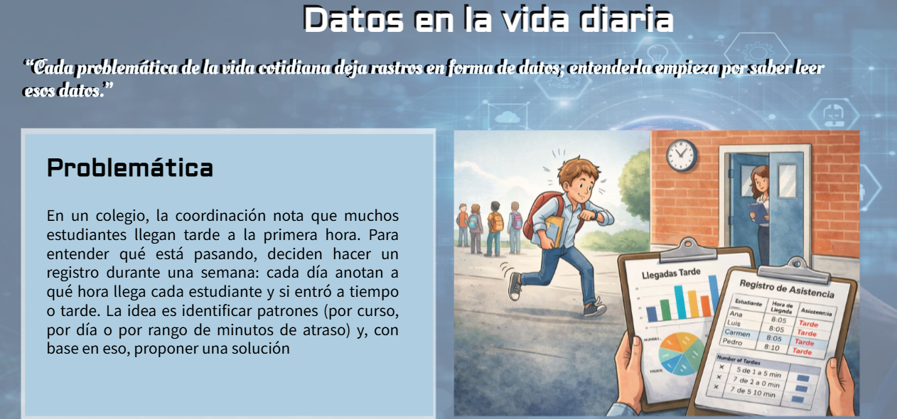
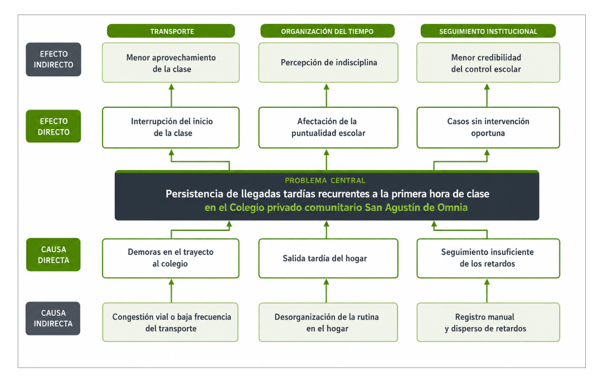

Normativa e introducción a la asignatura
Conoce la organización de Saber Conocer, sus ejes de trabajo y las orientaciones que acompañarán el desarrollo de la asignatura.
Pensamiento algorítmico
El pensamiento algorítmico es una forma de abordar problemas de manera lógica y estructurada: permite descomponer una situación en partes, identificar datos y relaciones relevantes y organizar una secuencia de acciones que oriente el diseño de una solución.
Antes de plantear una solución, es necesario reconocer qué tipo de problemática se está observando y delimitarla. El pensamiento algorítmico comienza por comprender con claridad qué sucede, a quién afecta y en qué contexto ocurre.
Abrir recurso Actividad: tipos de problemáticas
El árbol de problemas permite descomponer una situación compleja y organizarla en niveles. Se lee desde el problema central hacia abajo para identificar causas y hacia arriba para reconocer efectos.
Cómo leerlo: cada línea vertical representa una relación lógica. Una causa indirecta alimenta una causa directa; esa causa contribuye al problema central; y el problema genera efectos directos que pueden producir otros efectos.

Después de analizar el ejemplo, el mismo proceso se aplica a la problemática seleccionada por cada equipo. La propuesta deberá transformarse en el diseño de una solución digital o aplicación comercial que responda de manera concreta al problema identificado.
Qué información necesita la solución para comprender y atender la problemática.
Qué reglas, condiciones o relaciones debe considerar para trabajar con esos datos.
Qué resultados, alertas o información debe entregar a sus usuarios.
Qué decisión, acción o mejora permitirá realizar la solución propuesta.
La lógica es la misma del pensamiento algorítmico: problema → datos → reglas o relaciones → resultados → acción.
Los objetivos orientan el diseño de la solución porque expresan con claridad qué se busca lograr frente a la problemática identificada. Deben mantener relación directa con el problema y con la solución que se propone desarrollar.
Objetivo general: define el propósito principal de la solución y el resultado global que se espera alcanzar.
Objetivos específicos: organizan las acciones o etapas necesarias para alcanzar el objetivo general y orientar el diseño de la propuesta.